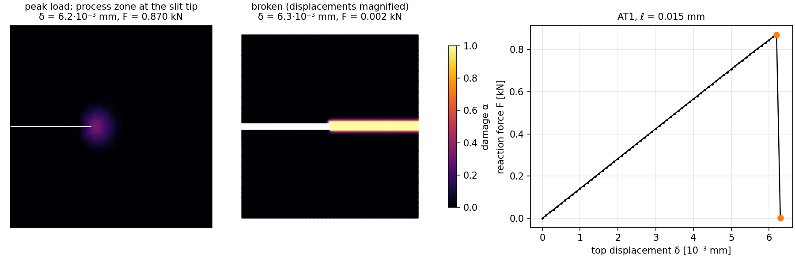

Phase-Field Fracture¶
Brittle fracture as energy minimization. A damage field
\(\alpha \in [0, 1]\) smears the crack over a length \(\ell\).
Where the crack starts, the path it takes and when it runs then all follow
from minimizing one energy [Francfort1998] [Bourdin2000]. The script
examples/solid/phase_field_fracture/phase_field_fracture.py runs the
single-edge-notched tension (SENT) benchmark [Miehe2010] in plane strain.
The new ingredient over Plasticity (J2 with Isotropic Hardening) is an inequality
constraint: damage cannot heal, \(\alpha_n \ge \alpha_{n-1}\). Every
load step is therefore a bound-constrained minimization. The script solves it
by alternate minimization, and both subproblems use vi_solve from
torch-sla, a Newton solve with bounds.
Model¶
The energy of a displacement \(\mathbf{u}\) and a damage field \(\alpha\) is
with \(\boldsymbol{\varepsilon} = \tfrac12(\nabla\mathbf{u} + \nabla\mathbf{u}^T)\) and a small residual stiffness \(g_0\).
Crack model. AT1 takes \(w(\alpha) = \alpha\) and \(c_w = 8/3\). It has an elastic phase: no damage forms below a critical stress [Pham2011]. AT2 takes \(w(\alpha) = \alpha^2\) and \(c_w = 2\), and damages at any load. Choose with
--model.Energy split [Amor2009]. Only the tensile volumetric part and the deviatoric part are degraded, so compression does not crack:
\[\psi_D = \tfrac{\kappa}{2} \langle \operatorname{tr}\boldsymbol{\varepsilon} \rangle_+^2 + \mu\, |\operatorname{dev}\boldsymbol{\varepsilon}|^2, \qquad \psi_R = \tfrac{\kappa}{2} \langle \operatorname{tr}\boldsymbol{\varepsilon} \rangle_-^2.\]
The script writes the two energy densities once, in PhaseFieldModel.
energy() integrates them, and
autograd turns the integrals into the residuals
\(\partial\mathcal{E}/\partial\mathbf{u}\) and
\(\partial\mathcal{E}/\partial\alpha\).
Irreversibility as bounds¶
At load step \(n\) the damage is sought in \([\alpha_{n-1}, 1]\). A minimizer under these bounds satisfies, node by node,
Either the residual vanishes, or the node rests on a bound that the residual
pushes against. This is a variational inequality, and it is exactly what
torch_sla.vi_solve(residual, x0, lower=..., upper=..., jacobian_fn=...)
solves. The method is reduced-space active-set Newton, the algorithm of
PETSc’s SNESVINEWTONRSLS [Benson2006]. Each Newton step solves for the
nodes off their bounds, then updates which nodes rest on a bound.
Prescribed values are bounds as well: lower == upper fixes a component.
The displacement Dirichlet conditions are imposed this way, so the
displacement solve needs no Condenser. A pre-crack can be
prescribed the same way, as \(\alpha = 1\) held on a line of nodes (the
alpha_fixed argument). The benchmark below uses a slit in the mesh
instead, so the notch faces are free from the start.
Alternate minimization¶
Each load step alternates between the two fields until they agree:
Displacement, with \(\alpha\) fixed. \(\mathcal{E}\) is convex in \(\mathbf{u}\) but only piecewise quadratic, since the split switches with the sign of \(\operatorname{tr}\boldsymbol{\varepsilon}\). Newton with a line search takes a few steps.
Damage, with \(\mathbf{u}\) fixed. For AT1 and AT2, \(\mathcal{E}\) is quadratic in \(\alpha\), so this is a bound-constrained quadratic program. Its Hessian does not depend on \(\alpha\) and is assembled once.
Stop when the displacement residual on the free degrees of freedom, evaluated with the new damage, is below \(10^{-4}\) of the reaction forces.
def solve_step(self, u_bc):
"""One load step with the Dirichlet values ``u_bc`` (full dof vector);
returns the number of staggered iterations."""
inf = torch.full_like(self.u, math.inf)
u_lower = torch.where(self.u_fixed, u_bc, -inf)
u_upper = torch.where(self.u_fixed, u_bc, inf)
a_lower = torch.where(self.alpha_fixed, self.alpha_value, self.alpha) # irreversibility
a_upper = torch.where(self.alpha_fixed, self.alpha_value, torch.ones_like(self.alpha))
scale = 1e-12
for it in range(1, self.max_staggered + 1):
alpha = self.alpha
self.u = vi_solve(lambda u: self.residual_u(u, alpha), self.u, lower=u_lower, upper=u_upper,
jacobian_fn=lambda u: self.tangent_u(u, alpha), line_search=True,
tol=1e-9, atol=1e-11, linear_solver=self.linear_solver)
u = self.u
hessian = self.hessian_alpha(u) # constant during the alpha solve
alpha_new = vi_solve(lambda a: self.residual_alpha(a, u), alpha, lower=a_lower, upper=a_upper,
jacobian_fn=lambda a: hessian, tol=1e-9, atol=1e-11,
linear_solver=self.linear_solver)
r = self.residual_u(u, alpha_new)
free = float(torch.linalg.vector_norm(r[~self.u_fixed]))
scale = max(scale, float(torch.linalg.vector_norm(r[self.u_fixed])))
if free <= self.tol * scale:
self.alpha = alpha_new
return it
if self.relaxation != 1.0:
alpha_new = (alpha + self.relaxation * (alpha_new - alpha)).clamp(a_lower, a_upper)
self.alpha = alpha_new
raise RuntimeError(f"staggered scheme did not converge in {self.max_staggered} iterations")
The two Jacobians are bilinear forms. As in every TensorMesh form,
forward describes one quadrature point and one pair of basis functions.
The point data disp and alpha arrive as graddisp and alpha:
class DisplacementTangent(ElementAssembler):
"""d2E/du2 with the split's tangent C = g C_0 + (1 - g) kappa [tr eps < 0] I x I."""
def __post_init__(self, model: PhaseFieldModel):
self.model = model
def forward(self, gradu, gradv, graddisp, alpha):
m = self.model
g = m.g(alpha)
compressed = (graddisp.diagonal().sum() < 0).to(gradu.dtype)
lam = g * m.lam + (1 - g) * m.kappa * compressed
I = torch.eye(gradu.shape[0], dtype=gradu.dtype, device=gradu.device)
return lam * torch.outer(gradu, gradv) + g * m.mu * ((gradu * gradv).sum() * I + torch.outer(gradv, gradu))
class PhaseFieldHessian(ElementAssembler):
"""d2E/dalpha2, which does not depend on alpha for AT1 and AT2 (g'' = 2)."""
def __post_init__(self, model: PhaseFieldModel):
self.model = model
def forward(self, u, v, gradu, gradv, graddisp):
m = self.model
reaction = 2 * m.psi_D(m.strain(graddisp)) + m.Gc / (m.cw * m.ell) * m.ddw
return reaction * u * v + 2 * m.Gc * m.ell / m.cw * (gradu * gradv).sum()
Single-edge-notched tension¶
Geometry: the unit square \([0, 1]^2\) mm, with a slit along \(y = 0.5\) from the left edge to the centre. The elements above the slit have their own copies of its nodes, so its faces separate freely.
Material: \(E = 210\) kN/mm², \(\nu = 0.3\), \(G_c = 2.7 \times 10^{-3}\) kN/mm, \(\ell = 0.015\) mm, AT1, \(g_0 = 10^{-6}\).
Loading: bottom clamped; top \(u_x = 0\), \(u_y = \delta\), in increments of \(10^{-4}\) mm.
Mesh: union-jack triangles, built with NumPy. The diagonals alternate like a checkerboard, so the mesh is mirror-symmetric about the crack line and favours no crack direction. \(h = \ell / 2\) in a band around the crack path, coarser above and below (about 6,400 nodes).


Fig. 63 Output of phase_field_fracture.py. Left: the damage around the slit tip
(white line) at peak load. Middle: the broken specimen, with displacements
magnified. Right: the reaction force on the top edge.¶
The response is linear elastic until \(\delta \approx 3.9 \times 10^{-3}\) mm (\(F \approx 0.55\) kN), when damage first appears at the slit tip: AT1 has an elastic phase. A process zone then grows at the tip while the load keeps rising, to a peak of 0.87 kN at \(\delta = 6.2 \times 10^{-3}\) mm. In the next load step the crack runs straight through the ligament and the reaction drops to zero. Under displacement control this propagation is unstable, so it happens within a single step.
Elastic steps take one or two staggered iterations, and steps with a growing
process zone up to about thirty. The step in which the crack runs takes 138,
out of about 320 for the whole run. With --model at2 damage grows from
the first step and the response softens before the peak (0.73 kN at
\(\delta = 5.9 \times 10^{-3}\) mm), but the crack again runs through in
one step.
Verification¶
tests/assemble/test_phase_field_fracture_example.py checks:
Hessians: the assembled Hessians against central differences of the autograd residuals.
Homogeneous solution: a strip in uniaxial tension with AT1 stays undamaged below the critical strain \(\varepsilon_c = \sqrt{3 G_c (1 - \nu^2) / (8 E \ell)}\). Above it, the damage is \(\alpha = 1 - (\varepsilon_c / \varepsilon)^2\), and the reaction force is \(g(\alpha)\, E \varepsilon / (1 - \nu^2)\) times the width.
Irreversibility: damage never decreases, including after an unloading step.
Prescribed damage: nodes held at \(\alpha = 1\) through
alpha_fixedstay there exactly.Coarse SENT run: the crack starts at the slit tip and runs straight along \(y = 0.5\) to the right edge. It dissipates \(G_c\) times its length, up to the effective-toughness factor of the mesh (see below).
Running it¶
cd examples/solid/phase_field_fracture
python phase_field_fracture.py # AT1, ell = 0.015 mm
python phase_field_fracture.py --model at2
python phase_field_fracture.py --ell 0.04 --h 0.02 # coarse and quick
The default run takes about a minute on one CPU node (AT2: about one and a
half), and the coarse one a few seconds.
--device cuda assembles on the GPU. The Newton systems then use cuDSS if
torch-sla has it, and SciPy on the host otherwise.
Notes¶
Resolution. \(h\) must resolve \(\ell\) (here \(h = \ell/2\)). The dissipated energy then exceeds \(G_c\) times the crack length by a mesh-dependent factor, because a fully broken band is at least one element wide. Here the 0.5 mm crack dissipates \(0.61\, G_c\), a factor of 1.22.
The length scale is a material parameter. With AT1, \(\ell\) also sets the strength, \(\sigma_c = \sqrt{3 G_c E' / (8 \ell)}\) with \(E' = E / (1 - \nu^2)\) in plane strain [Tanne2018]. Changing \(\ell\) changes when a crack nucleates, not only how smooth it is.
Solver. Alternate minimization is robust but slow while a crack runs. Over-relaxing the damage update [Farrell2017] helps:
--relaxation 1.6gives the same result here with 15–20 % fewer iterations, and saves more when a crack grows over many load steps. Composite and monolithic Newton schemes can need fewer iterations still, and they impose the bounds with the samevi_solvecall.
What’s next¶
Plasticity (J2 with Isotropic Hardening): history variables updated once per step, the other way to make a solid model path-dependent.
Forms: the dispatch-by-name rules behind
forwardandenergy().
G. A. Francfort and J.-J. Marigo, Revisiting brittle fracture as an energy minimization problem, Journal of the Mechanics and Physics of Solids, 46(8):1319–1342, 1998.
B. Bourdin, G. A. Francfort and J.-J. Marigo, Numerical experiments in revisited brittle fracture, Journal of the Mechanics and Physics of Solids, 48(4):797–826, 2000.
C. Miehe, M. Hofacker and F. Welschinger, A phase field model for rate-independent crack propagation: Robust algorithmic implementation based on operator splits, Computer Methods in Applied Mechanics and Engineering, 199(45–48):2765–2778, 2010.
K. Pham, H. Amor, J.-J. Marigo and C. Maurini, Gradient damage models and their use to approximate brittle fracture, International Journal of Damage Mechanics, 20(4):618–652, 2011.
H. Amor, J.-J. Marigo and C. Maurini, Regularized formulation of the variational brittle fracture with unilateral contact: Numerical experiments, Journal of the Mechanics and Physics of Solids, 57(8):1209–1229, 2009.
S. J. Benson and T. S. Munson, Flexible complementarity solvers for large-scale applications, Optimization Methods and Software, 21(1):155–168, 2006.
E. Tanné, T. Li, B. Bourdin, J.-J. Marigo and C. Maurini, Crack nucleation in variational phase-field models of brittle fracture, Journal of the Mechanics and Physics of Solids, 110:80–99, 2018.
P. E. Farrell and C. Maurini, Linear and nonlinear solvers for variational phase-field models of brittle fracture, International Journal for Numerical Methods in Engineering, 109(5):648–667, 2017.